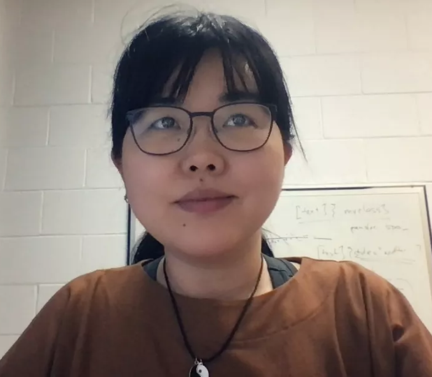
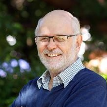
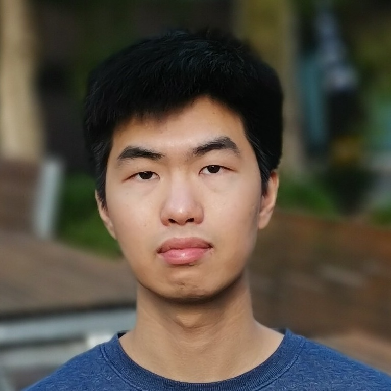
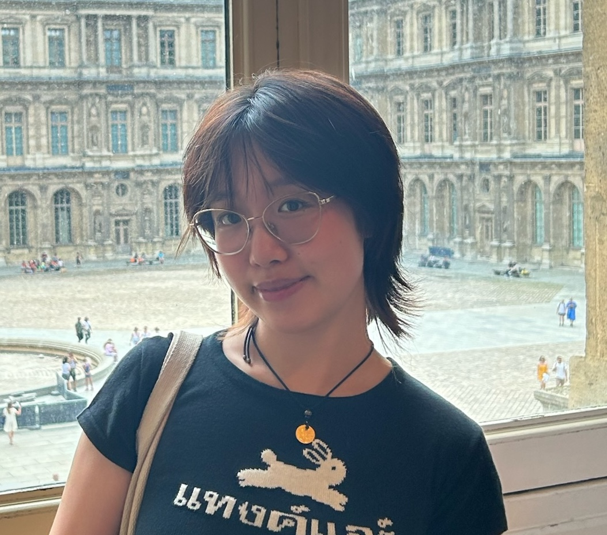
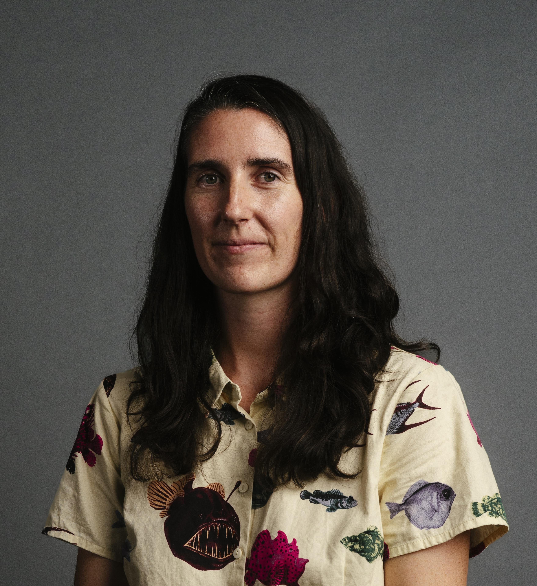

Emi Tanaka
ANU-AAGI lead
Statisticians, research software engineers and students working on analytics for the grains industry

ANU-AAGI lead
Associate Professor

E.J. Hannan Professor

Postdoctoral Fellow

Research Assistant
Research Fellow

Research Fellow
Research Software Engineer
Statistical Consultant